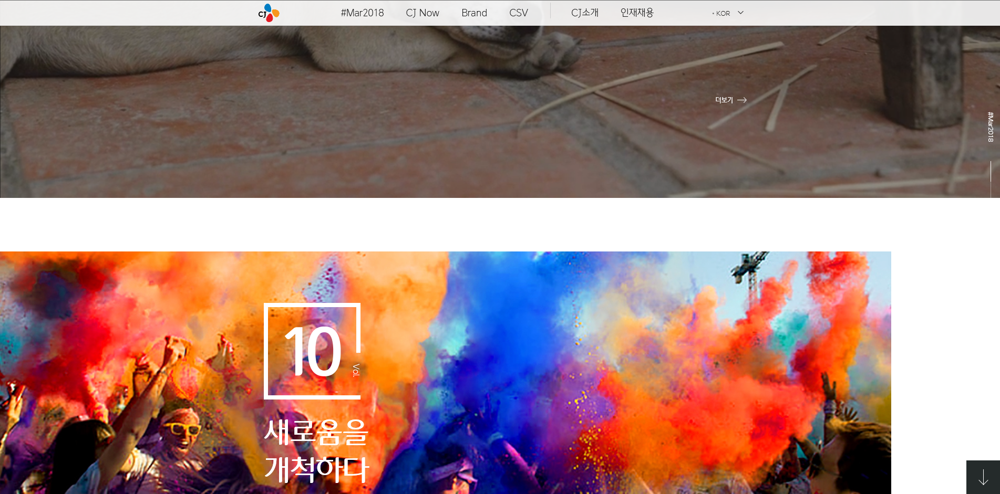
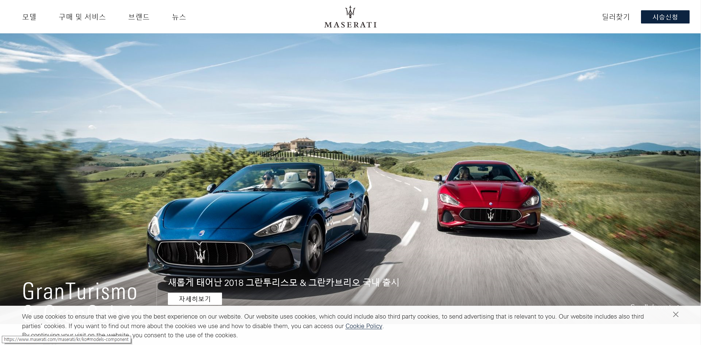
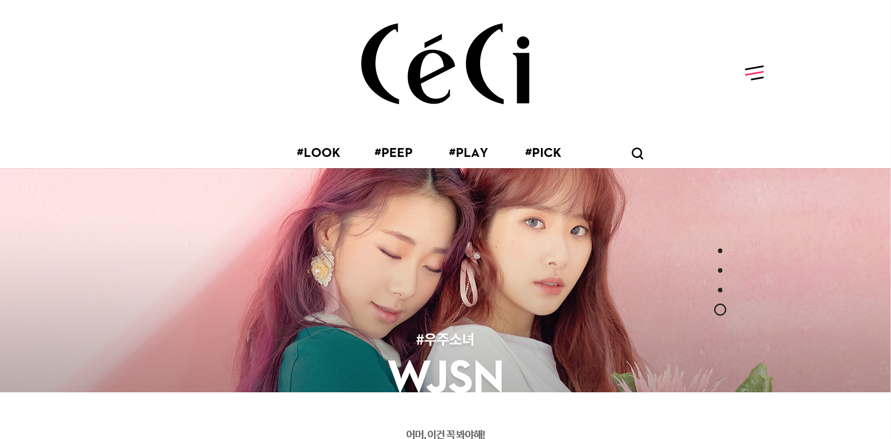

<!doctype>
	<html></html>
		<head></head>
		<body>
			<article>
			<br>
			<br>
			<hr>
			<h1>One Scroll Page Research</h1>
			<hr>
			<br>
			<br>

			<h2>CJ</h2>
			<a href="http://www.cj.net/"></a>
				<p>원스크롤 형식에 영상을 이용하여 cj의 모든 콘텐츠를 한눈에 보여준다.</p>
				<br>
				<br>

			<h2>Maserati</h2>
			<a href="https://www.maserati.com/maserati/kr/ko"></a>	
				<p>제품 모델과 상세 설명, 사용자 편의를 한 번에 확인 할 수 있다.</p>
				<br>
				<br>

			<h2>Lotte World Tower</h2>	
			<a href="https://www.lwt.co.kr/tower/en/main/main.do"></a>
				<p>메인 페이지에서 한스크롤에 다양한 콘텐츠를 확보 할 수 있다.</p>
				<br>
				<br>

			<h2>Ceci</h2>	
			<a href="http://www.ceci.co.kr/"></a>
				<p>카드 형식의 콘텐츠와 쎄씨에서 알리는 핫키워드, 올 해의 유행 등 사용자가 가장 많이 찾는<br>
				 콘텐츠가 메인에서 쉽게 찾을 수가 있다.</p>			
			</article>
			<br>
			<br>

			<h3>: Lotte world tower 웹사이트같이 한페이지에서 소개와 콘텐츠를 한 번에 확인할 수 있는 형식으로 하려고 합니다.</h3>
			<br>
			<br>
			<br>

		<style>
			body,article,h1,p{margin: 0; padding: 0;}
			article{width: 50%; background: white; margin:0 auto; }
			h1{font: 6em; text-align: center; }
			h2{font: 4em; text-align: center; }
			h3{font: 8em; text-align: center;}
			p{font: 3em; text-align: center; }
			img{width: 100%}
		</style>
